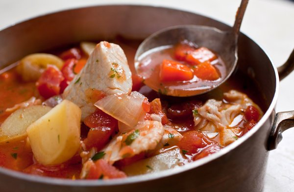

MY PASSION
Know the type of HTML element by clicking anywhere on the page!!.
The easiest delicious food to prepare is this!
What's your favorite color?
Click a button to choose what color you'd like this page to be:
Talk to the web page
Click a button to say something to the web page. See what it says back!
You said:
The web page said back:

I have passion in cooking various kinds of food. Fish-stew is just one of my delicious diet i have ever made. It is not an easy task hence worthy of appreciation. The origin of this recipe is Africa in Kenya. Most people at the lake and river areas are great fish eaters. There are many ways of preparing fish. However for the start, it is recommendeble to get used to one way before trying the next method. Be my guest as i make this delicious,most loved African fish-stew!!
Ingredient
- 4 large garlic cloves, cut in half, green shoots removed
- 4 anchovy fillets, soaked in water for 4 minutes, drained and rinsed
- 2 tablespoons extra virgin olive oil
- 1 large onion, chopped
- 1 celery rib, chopped
- 1 medium carrot, chopped
- Salt, preferably kosher salt, to taste
- 1 (28-ounce) can chopped tomatoes, with liquid
- 1 quart water
- 1 pound small new potatoes, scrubbed and quartered or sliced
- A bouquet garni made with a bay leaf, a strip of orange zest, a couple of sprigs each thyme and parsley, and a dried red chile if desired, tied together with a string
- Freshly ground pepper
- 1 to 1 ½ pounds firm white-fleshed fish such as halibut, tilapia, Pacific cod or black cod, cut in 2-inch pieces
Preparation
Place the garlic cloves and 1/4 teaspoon salt in a mortar and pestle, and mash to a paste. Add the anchovy fillets and mash with the garlic. Set aside. Heat the olive oil over medium heat in a large, heavy soup pot or Dutch oven, and add the onion, celery and carrot with 1/2 teaspoon salt. Cook, stirring, until the onion is tender, about five minutes. Add the pureed garlic and anchovy. Cook, stirring, until the mixture is very fragrant, about one minute, and then add the tomatoes. Cook, stirring often, until the tomatoes have cooked down a bit and the mixture smells aromatic, about 10 to 15 minutes. Add the water, potatoes, salt (to taste) and the bouquet garni. Bring to a simmer. Turn the heat to low, cover partially and simmer 30 minutes. Taste, adjust salt and add pepper to taste. Remove the bouquet garni. Season the fish with salt and pepper, and stir into the soup. The soup should not be boiling. Simmer five to 10 minutes (depending on the thickness of the fillets) or just until it flakes easily when poked. Remove from the heat, stir in the parsley, taste once more, adjust seasonings and serve.
